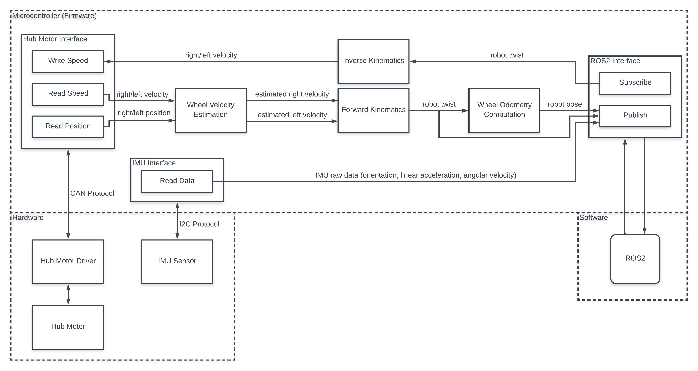

MBSE-2022-1/Firmware-Team Documentation
MEMBERS
Nattapat Jatuwong 63340500011 (Mobile Robot)
Paphada Prasongsuk 63340500033 (Gripper)
Sorapas Weerakul 63340500064 (Mobile Robot)
RoboCup@Home Requirement
SAFE NAVIGATION (indoors, with obstacle avoidance)
Mobile Robot Requirement
The robot must automatically move to the position specified by the user
Firmware system must calculate the current robot’s pose for navigation
Pose is calculated using wheel odometry from the robot twist
The robot must move at a safe speed for its surroundings
The robot must move at a linear velocity no more than 0.1335 m/s
The robot must have a manual control for quick setup and repositioning
Users must control the robot with Teleop twist keyboard on ROS2.
Firmware system must be able to interface between ROS2
ROS2 must send a velocity command to make the robot move at a desired speed
The microcontroller must be able to send the robot’s pose and imu raw data to ROS2
Communication between devices must be implemented with a frequency greater than or equal to 20 Hz
Gripper Requirement
The gripper must be able to pick up items without dropping them and the user can control the opening/closing of the gripper
Firmware system must apply the gripper’s force to properly pick up objects
Use a sensor such as present load from DYNAMIXEL to measure the force used to pick up objects
Firmware system must be able to interface between ROS2
ROS2 must command the gripper to pick up or release an object
System Architecture
Firmware Architecture
Hardwares and Connection
Microcontroller Subsystem
ROS2 Architecture
-
Calibration and xicro installation
Microcontroller port check
-
Links
Source code 1: https://github.com/MBSE-2022-1/Firmware-Team
Source code 2: https://github.com/VeroAlfa/firmware
Firmware-only Documentation: https://firmware-docs.readthedocs.io/en/latest/
Presentation: Canva